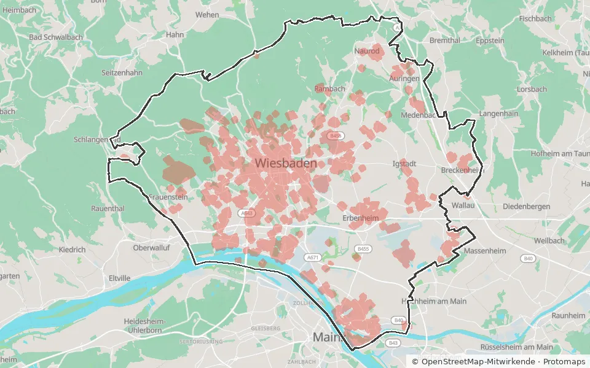
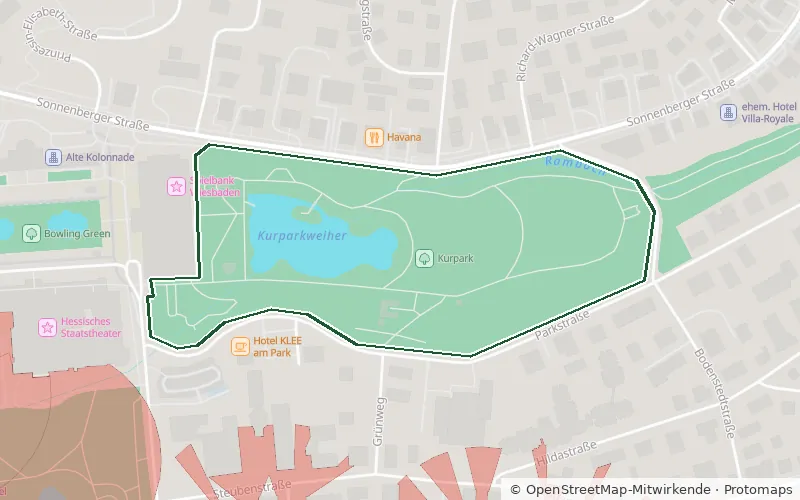
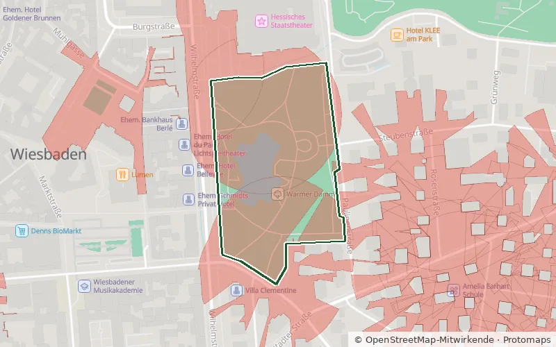
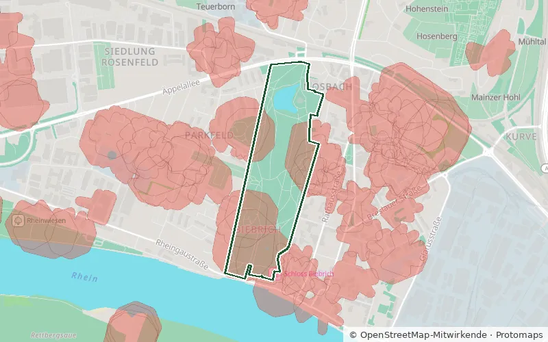
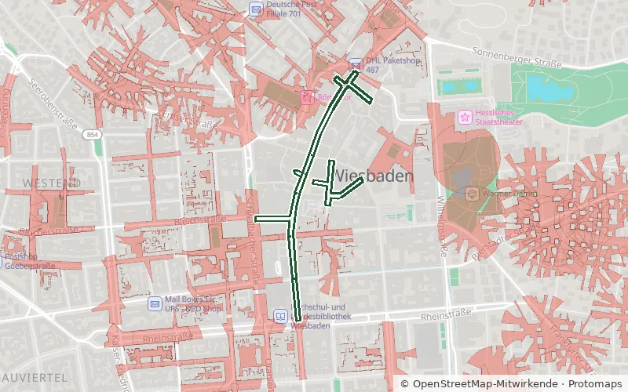

In Wiesbaden ist öffentliches Kiffen auf 22 km² verboten, das sind 10,6 % der Stadtfläche von 204 km². Grund sind 1 124 Einrichtungen wie Schulen und Spielplätze: In ihrer Sichtweite, bis 100 Meter vom Eingang und ohne Gebäude dazwischen, verbietet § 5 KCanG den Konsum. Dazu kommen die Fußgängerzonen von 7 bis 20 Uhr und überall die Gegenwart von Minderjährigen.
Ein Drittel der Stadt ist Wald, vor allem im Taunus (32 % der Stadtfläche), und dort liegt kaum eine Zone; ohne den Wald gerechnet sind es 13,4 %.

Woher die Zonen in Wiesbaden kommen
| Einrichtung | Anzahl | Zonenfläche |
|---|---|---|
| Schulen | 113 | 5,1 km² |
| Kitas und Kindergärten | 137 | 2,8 km² |
| Kindertagespflege | 10 | 0,2 km² |
| Spielplätze | 282 | 6,3 km² |
| Kinder- und Jugendeinrichtungen | 21 | 0,5 km² |
| Sportstätten | 561 | 12,7 km² |
Jede Art für sich gezählt, Überlappungen also mehrfach. Anbauvereinigungen nur, soweit in OpenStreetMap eingetragen.
Die meisten Zonen gehen auf die 561 Sportstätten zurück, danach auf die 282 Spielplätze. Auf Spielplätzen und Schulhöfen verbietet die Gefahrenabwehrverordnung der Stadt außerdem Alkohol; Spielplätze sind von 8 bis 20 Uhr offen, im Sommer bis 21 Uhr (Gefahrenabwehrverordnung).
Kurpark, Biebrich und Anlagen
Der Kurpark liegt außerhalb jeder Zone (0 %): Im Park und bis 100 Meter um ihn liegt keine Einrichtung, die eine Zone auslöst. Der Warme Damm dagegen liegt fast ganz in einer (93 %), wegen der Spielplätze darauf.


Im Schlosspark Biebrich sind es 43 %, um vier Sportanlagen und einen Spielplatz im Park, in den Nerotalanlagen 60 %. Auf einem 100 Meter breiten Streifen Land entlang des Rheins liegen 20 % in einer Zone. Reisinger- und Herbert-Anlage am Hauptbahnhof kommen auf 66 %.

Innenstadt
Eine amtliche Liste der Wiesbadener Fußgängerzonen gibt es nicht. Das Stadtlexikon nennt Faulbrunnenstraße, Ellenbogengasse, Mauritiusplatz, Kleine Kirchgasse und Kirchgasse und die „Quellenmeile“ von der Bärenstraße bis zur Webergasse (Stadtlexikon); seit 2025 ist auch die Wellritzstraße Fußgängerzone (Stadt Wiesbaden, November 2025). Marktstraße, Schlossplatz und Luisenplatz gehören nach den Quellen nicht dazu. Dort gilt von 7 bis 20 Uhr Konsumverbot; blau sind die Fußgängerbereiche aus OpenStreetMap.
Von Kirchgasse, Langgasse und den Gassen daneben liegen außerdem 22 % in einer Sichtweiten-Zone. Der Mauritiusplatz liegt außerhalb (0 %), der Luisenplatz zu 30 %, der Platz der Deutschen Einheit ganz in einer Zone (100 %).

Hochschulen, Stadion und Feste
Hochschulen sind nach § 5 KCanG keine Verbotsorte. Die Hochschule RheinMain verbietet Cannabis aber per Hausordnung, außer mit ärztlicher Verordnung (Hausordnung); ihr Gelände liegt zu 23 % in einer Zone. In der BRITA-Arena verbietet die Stadionordnung, Drogen wie Cannabis mitzubringen, auch auf Zufahrten und Parkplätzen (Stadionordnung).
Ein Cannabisverbot auf Festen wie der Weinwoche oder dem Sternschnuppenmarkt hat die Stadt nicht; ein Antrag dafür wurde 2025 im Ausschuss abgelehnt. Ein Forschungsprojekt zur Abgabe von Cannabis über Apotheken hat die zuständige Bundesanstalt 2026 nicht genehmigt (Stadt Wiesbaden, Februar 2026).
Was sonst noch in Wiesbaden gilt
Hessen hat feste Bußgelder: Konsum in einer Verbotszone, auch in der Fußgängerzone, kostet 500 Euro, in Gegenwart von Kindern und Jugendlichen 1.000 Euro (Bußgeldkatalog Hessen). Zuständig ist die Stadt. Die Waffenverbotszone der Innenstadt regelt Cannabis nicht. Eigene Verbotszonen für Cannabis hat Wiesbaden nicht (Stand 27. November 2026).
Häufige Fragen zu Wiesbaden
Wo darf man in Wiesbaden kiffen?
Nach § 5 KCanG außerhalb der roten Flächen, etwa im Kurpark (0 % in einer Zone). Tagsüber nicht in den Fußgängerzonen der Innenstadt, nie in Gegenwart von Minderjährigen und nicht gegen ein Hausrecht, wie auf dem Gelände der Hochschule RheinMain. Weiß heißt nicht sicher erlaubt: Hecken, Bäume und fehlende Einrichtungen kennt die Karte nicht.
Wie genau ist das?
Täglich aus OpenStreetMap gerechnet, mit Gebäuden als Sichthindernis; die Zahlen hier sind vom 27. November 2026. Eine Orientierungshilfe, keine Rechtsauskunft (wie gerechnet wird).
Fehlt eine Einrichtung? Korrekturen in OpenStreetMap stehen am Tag darauf auf der Karte; bitte nur eintragen, was es vor Ort gibt.